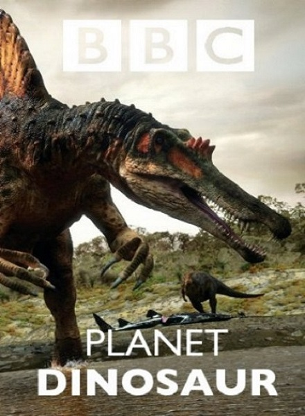

Здравствуйте! Сегодня мы отправляемся на 100 и 200 милионов лет назад. В эру динозавров. Все ещё с детства смотрели TV, читали разную литературу. Эта тема очень интересна простому люду. Я ещё с детства интересовался тем временем. Смотрел на то, как зарождалась жизнь, какие виды существ обитали в то время и самое главное какие динозавры там были.
Бывают времена, когда просто хочется посмотреть очередной фильм BBC о динозаврах и вселенной. Так оно и случилось. В субботний вечер, я включил TV и наткнулся на очередную серию BBC. Фильма о видах динозавров существовавших 100 и 200 милионов лет назад. Возможно, вы уже посмотрели этот фильм. Я считаю, не будет лишним пересмотреть ещё раз и показать тем, кто не видел. Тем более фильм стоящий и как, я понял новый. ...